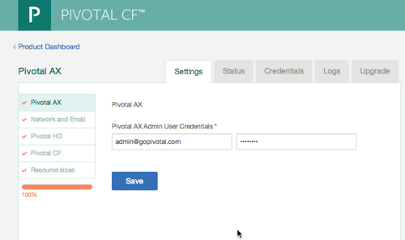

Configuring Pivotal AX
The following steps configure your Pivotal AX installation. After you fill in the necessary information, the Pivotal CF Operations Manager creates the necessary virtual machines and installs the Pivotal AX software. Depending on the type and amount of hardware, network throughput, and the size of your installation, this process can take up to several hours to complete.
Before beginning these steps, you must complete the Pivotal CF Operations Manger setup and your Pivotal HD cluster should be installed, configured, and running. See Installation Guide.
You should be logged on to the Pivotal CF Operations Manger Web application to begin these steps. (See Configuring Pivotal CF Operations Manager to Install Pivotal AX for login instructions.)
Click the Pivotal AX tile.
The Pivotal AX configuration page displays:

Select the Settings tab.
Select Pivotal AX from the navigation menu on the left and enter a new user name and password for your Pivotal AX administrative user.
Click Save.
Select Network and Email from the left navigation menu and enter the following information about your networking environment:
Parameter Description Default Value Host Mappings IP address to host name mappings for all nodes in the Pivotal HD cluster. Enter each mapping as pairs of IP addresses and host names, separated by a space, with each mapping on a separate line. For example: -
abc-w18.dh.fooco.com 10.110.124.221 abc-w18.dh.fooco.com 10.110.124.221
SMTP Host and Port Host name and port number of the outgoing mail server used by Pivotal AX to send email notifications to users. Port 25 SMTP User Name and Password Username and password for access to the SMTP server. Leave these fields blank if the SMTP server does not require username and password authentication. Enable SMTP Starttls Select this option if the SMTP server uses encryption. disabled Support Email Email alias that users can use to make support requests. Proxy Host and Port Host name and port number of proxy server. If your network does not require a proxy server, you may leave these fields blank -
Click Save.
Select Pivotal HD from the left navigation menu and enter the following information about your Pivotal HD (Hadoop) installation:
Parameter Description Default Value Pivotal HD Version Select the version number of your Pivotal HD deployment from the drop-down list. For information on supported versions, see System Requirements and Sizing Guidelines. HDFS Name Node IP and Port IP address and port number of the HDFS name node Port 8020 HBase Zookeeper Hosts IP addresses of HBase Zookeeper hosts. Separate the hosts with a comma. HBase Master Port Port number of the HBase master server Port 60000 HBase Master Info Port Port number of the HBase master Info server Port 60010 Hive Server IP and Port IP address and port number of the Hive server Port 10000 YARN Resource Manager IP and Port IP address and port number of the YARN resource manager Port 8032 YARN Scheduler port Port number of the YARN scheduler Port 8030 Map Reduce History Server IP and Port IP address and port number of the Map Reduce Server, If your Pivotal HD cluster was deployed by ICM, you can get this URL from ICM. If not, enter the same host name as for YARN resource manager. Port 10020 Map reduce Java Opts Java options that are passed to Map Reduce jobs. -Xmx2048mMap Task Memory Size Memory size, in megabytes, for Map tasks. You may need to increase this value if you are analyzing large data sets. 2176 Reduce Task Memory Size Memory size, in megabytes for Reduce tasks 2176 Hadoop Kerberos Enabled Select this option only if your Pivotal HD cluster has Kerberos enabled.(Supported only for Pivotal HD version 1.0.1.) disabled Hadoop Kerberos Domain Realm Domain realm for Hadoop Kerberos Hadoop Kerberos Admin Server IP and Port IP address and port number of the Hadoop Kerberos Admin server Hadoop Kerberos Key Distribution Center Server IP and Port IP address and port number of the Hadoop Kerberos Key Distribution Center Server Hadoop Kerberos Access Keytab File Content Kerberos keytab contents (base 64 encoded) from binary file. You created and encoded this file in a previous installation step. See Preparing your Pivotal HD Deployment for Pivotal AX. HDFS Name Node FQDN Fully-qualified domain name for the HDFS Name node(Required only when Kerberos is enabled.) HDFS Resouce Manager FDQN Fully-qualified domain name for the HDFS Resource manager (Required only when Kerberos is enabled.) Map Reduce History Server FQDN Fully-qualified domain name for the Map Reduce History Server HIve Server FQDN Fully-qualified domain name for the Hive Server Click Save.
Select Pivotal CF from the left navigation menu and enter the following information about your Pivotal Cloud Foundry installation:
Note: Fill in these fields only if you want to enable Cloud Foundry applications to send data to your Pivotal AX deployment.
Parameter Description Default Value Cloud Controller URL URL for Cloud Foundry Controller Cloud Foundry Credentials Username and password for your Pivotal Cloud Foundry installation. To obtain the credential:
- Click Product Dashboard
- Select Elastic Runtime
- Click the Credentials tab
- Copy the password for the UAA administrator to your clipboard.
- Paste the password into this field.
Click Save.
Select Resource Sizes from the left menu. The Resource sizes configuration screen displays:

On this screen, you define the number of instances applied to each of the resources required for your Pivotal AX installation. The number of instances for each job depend on the size of your Pivotal AX deployment and the type of analytics you intend to perform. You can configure the number of instances, CPU, RAM, and disk space for each of the following types of nodes in your Pivotal AX deployment:
- Zabbix and CF broker
- Management
- Messaging
- Query
- Storm
- Compilation
For more information, see System Requirements and Sizing Guidelines.
Click Save.
Click Install Updates. The installation process begins. The Operations Manager attempts to validate the values you entered. If any error messages display, make the necessary corrections and click Save. The Install Pivotal CF page displays the progress of the installation. From this page you can:
- Click Show Progress to update the display.
- Click Show verbose output to see the output of the installation commands.
When the installation is complete, click the Status tab to see the IP addresses of the installed nodes. Note the IP address of the management node.
Your Pivotal AX installation is now complete. To begin analyzing your data, see the following sections: